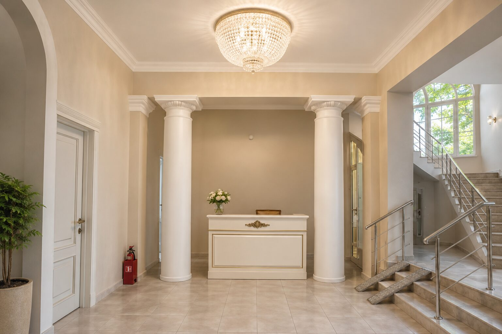

После инсульта и больницы
Когда после больницы нужно больше заботы, чем можно дать дома
Временное или постоянное проживание с круглосуточным присутствием персонала и бытовой помощью — пока близкому человеку нужно немного больше внимания.
После больницы всё меняется — иногда на время, иногда насовсем
Врачи выписали, лечение позади, но человеку пока трудно себя обслуживать: сложно вставать, готовить, следить за приёмом лекарств, оставаться одному дома. Семья разрывается между работой и постоянным присутствием рядом.
«Дайте близкому время восстановить силы в безопасной обстановке — и себе время просто быть рядом, а не единственным помощником.»
Бытовая забота и безопасная среда, пока человек восстанавливает силы
Мы создаём безопасную, комфортную среду и берём на себя повседневную заботу, пока человек восстанавливает силы.
- Присутствие персонала 24/7 и помощь в бытовых вопросах
- Наблюдение за самочувствием и привычным состоянием резидента
- Помощь маломобильным гостям, в том числе с использованием бассейна с подъёмным устройством
- Возможность привлечения необходимых специалистов в рамках доступных и законных услуг
- Регулярная связь с семьёй о состоянии близкого человека
Временно или постоянно — как удобно вашей семье
Вопросы о проживании после больницы
Занимается ли «Династия» лечением или реабилитацией?
Нет. Медицинская лицензия резиденции в процессе оформления, поэтому мы не оказываем лечебных и реабилитационных услуг. Мы обеспечиваем бытовую заботу, безопасную среду и наблюдение за самочувствием.
Можно ли оформить проживание на короткий срок?
Да, возможно как временное, так и постоянное размещение — конкретные условия обсуждаются индивидуально с администратором.
Как организована помощь маломобильным гостям?
Персонал присутствует круглосуточно, территория и общие пространства организованы с учётом потребностей маломобильных резидентов, бассейн оборудован подъёмным устройством.
Как семья будет в курсе состояния близкого человека?
У каждой семьи есть постоянный контакт с представителем резиденции для регулярной связи.
Другие ситуации, в которых мы можем помочь
Приезжайте посмотреть сами, до разговора с близким человеком
Посмотрите территорию и комнаты, познакомьтесь с командой, задайте любые вопросы — и только потом примите решение вместе с семьёй.